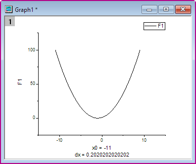
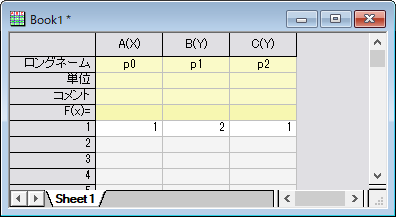
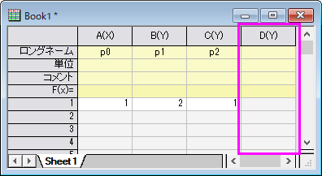
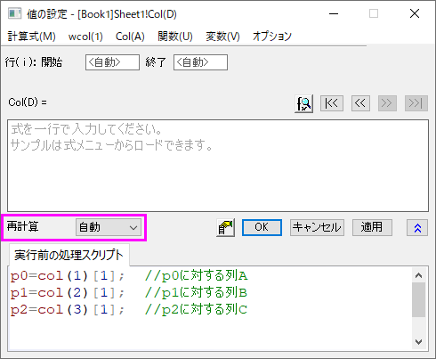
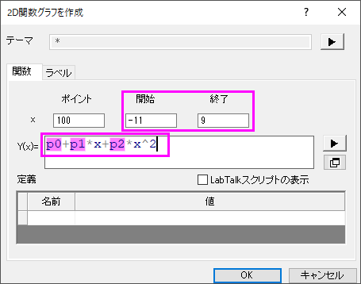
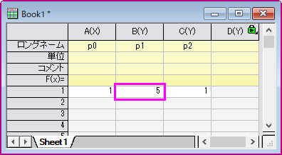
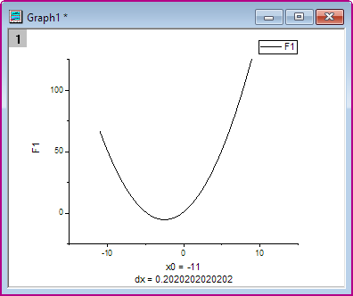

ワークシートで定義したパラメータで関数をプロットする
PlotFunc-Parameter-in-Wks
サマリー
Originは関数をプロットできます。 また、ワークシートで定義したパラメータで関数をプロットすることもできます。 ワークシートにあるパラメータの変更に伴って、関数グラフを自動的に更新できます。
- 
学習する項目
このチュートリアルでは、以下の項目について解説します。
- 値の設定ダイアログでワークシートから変数を定義する
- パラメータと一緒に関数をプロットする
- パラメータの変更時に自動的にグラフを更新する
ステップ
この関数を例に解説をします。 y=p0+p1*x+p2*x^2
- 3つのパラメータ p0, p1, p2 が次の図のように、それぞれ列A、列B、列Cに保存されているものとします。
- 
- 標準ツールバーの列の追加ボタン
 をクリックして、新しい列を追加します。
をクリックして、新しい列を追加します。
- 
- D列を選択してから、列：列値の設定を選択します。 再計算ドロップダウンリストから自動を選択します。
以下のスクリプトを実行前の処理スクリプト編集ボックスに入力します。OKボタンをクリックしてダイアログを閉じます。
- 
- 列Dの右上角に、再計算モードが自動であることを示す緑色の錠前アイコンが表示されます。

- 作図：関数プロット：2Dグラフ作成を選択し、2D関数グラフの作成ダイアログを開きます。
- ダイアログで以下のようにオプションを設定し、OKボタンをクリックしてダイアログを閉じます。
- 
- すると、このような関数グラフが作図されます。
- 関数グラフはワークシートの最初の行を変更すると、自動的に更新されます。列2の最初の行の値を2から5に変更します。当該セル以外の場所をクリックして変更を終了します。
- 
- 関数グラフが更新され、この変更が反映されます。
- 
スクリプト
こちらは、値の設定ダイアログの実行前の処理スクリプトに入力するスクリプトです。
p0=col(1)[1]; //p0に対する列A
p1=col(2)[1]; //p1に対する列B
p2=col(3)[1]; //p2に対する列C
作図の詳細ダイアログボックスのF1(x)編集ボックスの関数は次のように定義されます。
p0+p1*x+p2*x^2